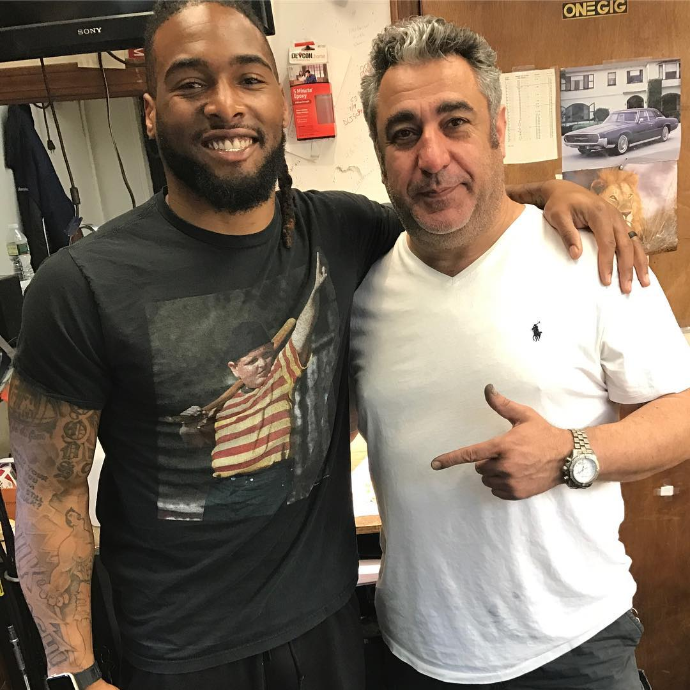

Yuro Customs is a legacy of excellence in fine jewelry. With a heritage spanning over two decades, we stand for unparalleled quality and luxury in jewelry making.
At the helm is Mr. Yuro, whose artisanal expertise and visionary leadership have earned recognition from publications like the Boston Globe. Each creation is a celebration of artistry — every piece narrates its own story.
Our clientele includes players from the New England Patriots and artists such as Kevin Gates, each seeking exceptional craftsmanship.
